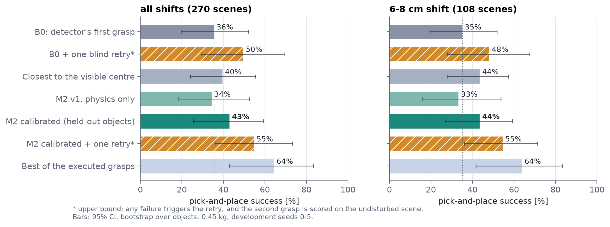

The baseline pipeline runs end to end, from a depth image to an object in the bin. The M2 prototype plugs in between the detector and the arm, and re-ranks the detector's grasps before the arm moves.
Early results
Development set: 9 objects at 0.45 kg × 5 hidden shifts × 6 seeds = 270 scenes. To find out what a better choice could achieve, I executed every scene's first ten reachable grasps, so any policy that picks one of them can be scored with that grasp's real outcome. Intervals are 95% bootstrap over objects.
